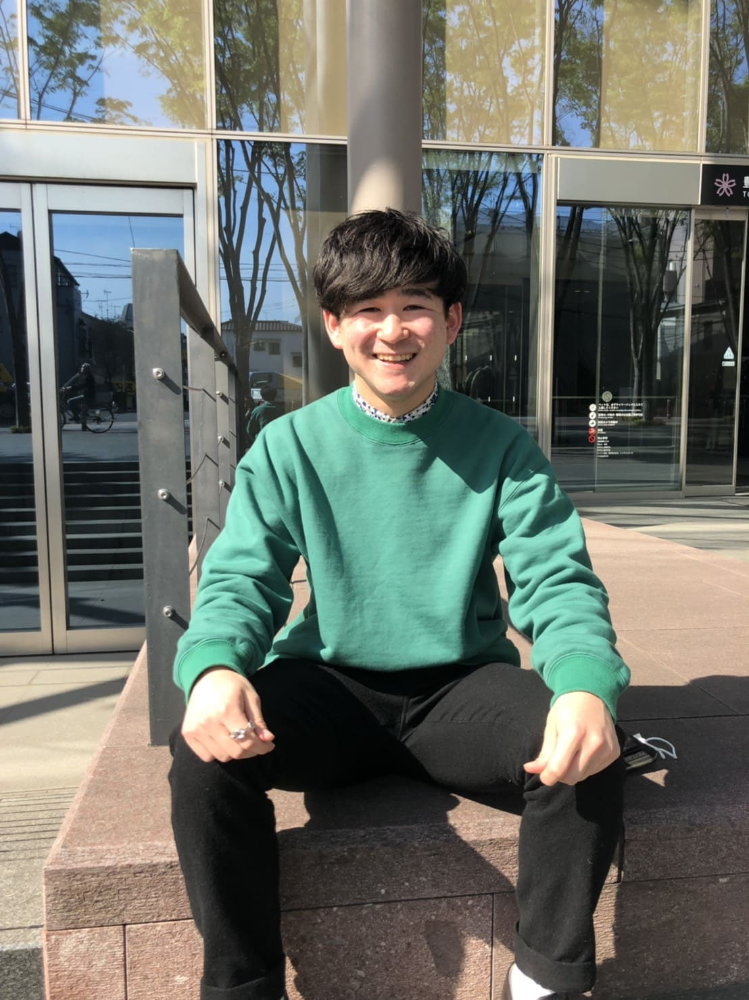

M.Mさん 21歳(大学4年生 休学中)
Q. なぜプログラミングに興味を持ったんですか？
就活の時にWeb系出版社に応募したらコードが書けないとダメと言われてプログラミングを勉強してみようと思ったんです。
Q. それまではプログラミングに興味ありませんでしたか？
なかったですね。遊んでばかりでした(笑)。やりたい方面に進むために勉強しようと思ったんですけど、はじめは軽はずみに飛び込んでみた感じです。
Q. 他のプログラミングスクールと比較しましたか？
比較してません。とりあえずやるしかないと思って飛び込んでみました。卒業後、もっと学びたいと思ってから比較してみました。見学とかにも行ってみましたけど、他のスクールでは何か物足りなさを感じました。
Q. どんなところに物足りなさを感じましたか？
他のスクールは個人個人でやってる感じで、切磋琢磨しながら学んでいくという感じがしなかったんです。
Q. 授業の雰囲気はどうでしたか？
少人数での講義だったので質問もしやすくてよかったです。初学者からしたら結構スパルタだったので、ついていくのに大変でしたけど、振り返るとそれがよかったなと思いました。
Q. 講師はどうでしたか？
ついていけてない時も丁寧に教えてくれましたし質問も本当にしやすくてよかったです。
相談にも乗ってくれますし、Code
Villageに出会えて良かったと思ってます。
Q. カリキュラムの内容やレベルはどうでしたか？
パソコン自体が初心者だったので、最初はついていくのに必死でみんなとの差を感じていました。 中盤はだいぶついていけるようにはなりましたけど、キツさはありましたね。 実践型の授業なのもかなりよかったですし、スパルタ感がモチベーションにつながりました。
Q. 挫折しそうになったことがありますか？
やめたいと思ったことはありません。なんとかついて行って終わる頃には追いつくか追い抜けるくらいになりたいと思いながら頑張ってました。
Q. どのくらいのレベルまで出来るようになりましたか？
HP作成は難なく出来るようになりました。初めはパソコンでメールを打つのすらよく分からないくらいだったのでかなりの成長を感じています。
Q. 自学習時間の確保は大変ではありませんでしたか？
大学にも行きながらアルバイトもしながらだったので大変でした。夜中とかにやっていましたね。自学習しないとついていけないと思って必死に頑張っていました。
Q. どのくらい自学習しましたか？
ほぼ毎日6〜7時間していました。やるしかないと思って睡眠時間を削ってでも自学習時間を確保していました。
Q. 働いていて自学習時間が取れない人にとっては難しいカリキュラムだったと思いますか？
本人のやる気と根性次第だと思います。忍耐力との勝負ですかね(笑)。目的が曖昧だとキツイかもしれません。
Q. 苦労した点はありますか？
自学習時間の確保や課題は少し大変でした。レベル別に分かれるまでは足を引っ張ってるように感じて申し訳ないなと言う気持ちもありましたが、それがさらにやる気につながったと思います。
Q. Code Villageならではの魅力はどんなところだと感じましたか？
スパルタなところですね。実践型であり参加型な授業スタイルが本当によかったです。みんなと切磋琢磨出来る感じが成長につながったと思うし環境がとにかく良かったです。
Q. Code Villageに通って得たこと(技術以外で)はありますか？
自学習能力が身につきました。分からないところとかをまずは自分で調べる力が身についたと思います。
Q. プログラミングのどんなところが好きですか？
サイトを作ってて、イメージ通りのものが作れた時が楽しくて癖になりますし、うまく動かない時に解決できたときは飛び上がるくらい嬉しいんです。
Q. これからのキャリアについてどのように考えていますか？
エンジニア一本に絞って頑張っていきたいと思っています。そのために大学を一年間休学することに決めました。ステップアップのために更に勉強もしながら、実際に案件をこなしたりして実力をしっかりと身につけていくつもりです。この一年は今後のキャリアのために追い込んでいく覚悟です。
Q. これからプログラミングを勉強しようとしている人に一言ください。
本気でスキルをつけたい人にはCode Villageはおすすめです。スパルタなので最初は大変かもしれないけど、だんだん楽しくなりますし、パソコン初心者だった僕でもできるようになったから大丈夫だと胸を張って言いたいです！ただ、軽はずみに足を踏み込むと続かないかも。覚悟は必要です。